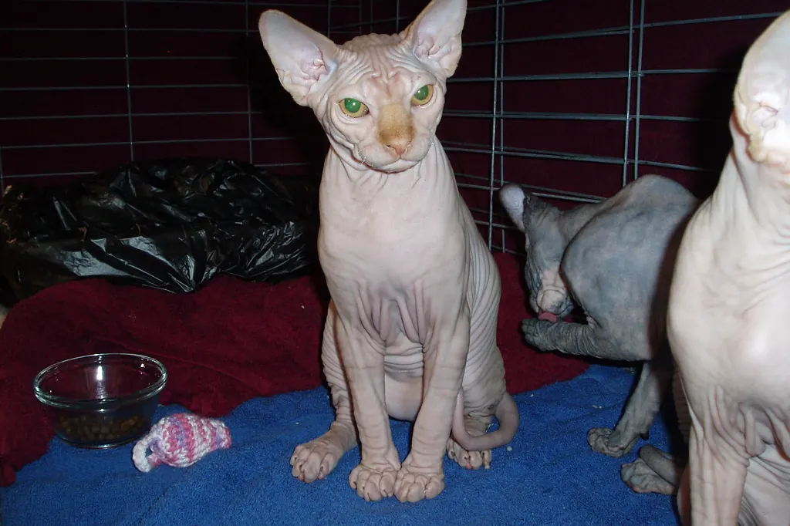

🐈 Sphynx : caractère, besoins et soins de la peau

Ses origines
Le sphynx est né au Canada dans les années 1960, d'une mutation naturelle donnant des chatons sans poils, ensuite sélectionnée.
Son caractère
Le sphynx est souvent extraverti, câlin et curieux. Il recherche le contact (et la chaleur) de ses humains et apprécie la compagnie d'autres animaux.
Ses besoins
Il a besoin de chaleur : coins douillets, plaids, parfois un vêtement adapté s'il a froid. Il est aussi sensible au soleil : pas d'exposition prolongée derrière une vitre ou dehors. Jeux quotidiens et compagnie sont indispensables.
L'éducation
Très sociable, il apprend bien avec des récompenses. Habituez-le tôt et en douceur aux bains et aux soins, avec des friandises (soins coopératifs).
L'entretien
Sans poils pour absorber le sébum, sa peau devient grasse : selon les chats, il faut la nettoyer régulièrement (lingettes douces ou bain avec un produit adapté conseillé par le vétérinaire). Nettoyez aussi ses oreilles et le pourtour des griffes.
Sa santé : points d'attention
Une maladie du cœur (la cardiomyopathie hypertrophique) est connue dans la race : demandez à l'éleveur les dépistages réalisés sur les parents et parlez du suivi avec votre vétérinaire. Surveillez aussi sa peau (rougeurs, boutons) et protégez-le du froid et des coups de soleil.
Au quotidien
Des jeux, des câlins, un couchage chaud, un nettoyage régulier de la peau et une maison à bonne température. Évitez les sorties non surveillées.
Avec les enfants et les autres animaux
Très sociable, il apprécie généralement les enfants respectueux et les autres animaux, chats comme chiens.
Est-ce la race pour vous ?
- ✅ Oui si : Vous cherchez un chat très câlin, vous êtes souvent présent et les soins de la peau ne vous font pas peur.
- ❌ Plutôt non si : Vous voulez un chat indépendant ou vous êtes souvent absent.
Chaque animal est unique : le caractère dépend aussi de son histoire, de sa socialisation et de son éducation. Pensez à l'adoption en refuge ou en association de race, et passez du temps avec des chiens ou des chats de la race avant de vous décider.
Le matériel utile
Il renvoie la chaleur du corps, sans électricité : parfait pour un chat frileux.
Questions fréquentes
Le sphynx est-il hypoallergénique ?
Non : les allergies aux chats sont dues à des protéines présentes notamment dans la salive et la peau, pas seulement aux poils. Passez du temps avec des sphynx avant d'adopter si vous êtes allergique.
A-t-il froid ?
Oui, plus facilement qu'un chat à poils : prévoyez des coins chauds et, si besoin, un vêtement adapté.
Faut-il le laver ?
Sa peau grasse doit être nettoyée régulièrement, à un rythme qui dépend de chaque chat. Demandez conseil à votre vétérinaire pour le produit.
Pour aller plus loin : chat qui miaule la nuit · quel griffoir choisir · le guide du chat · toutes nos fiches races · quel animal pour moi ?